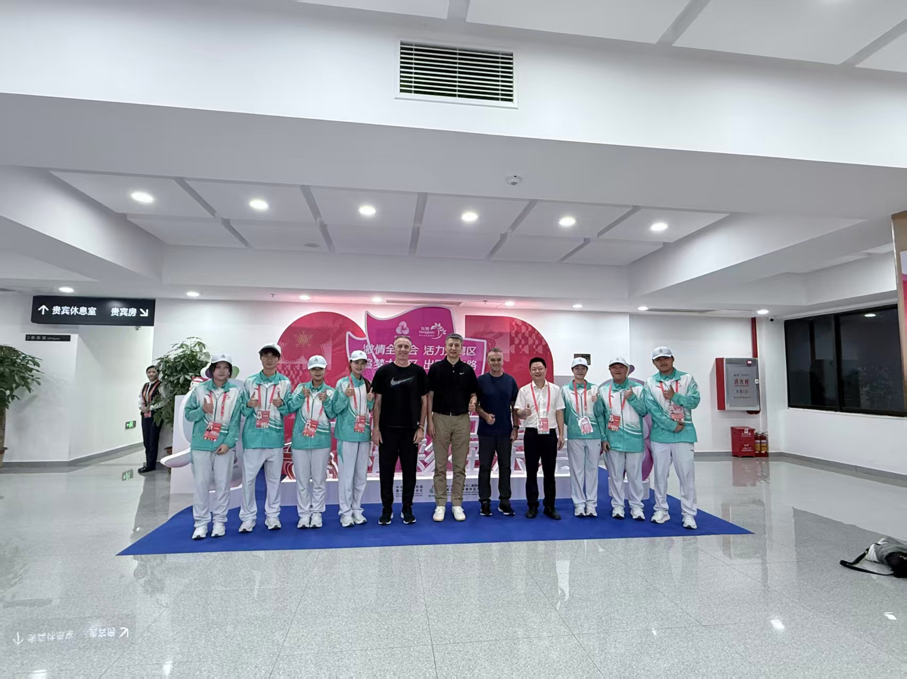
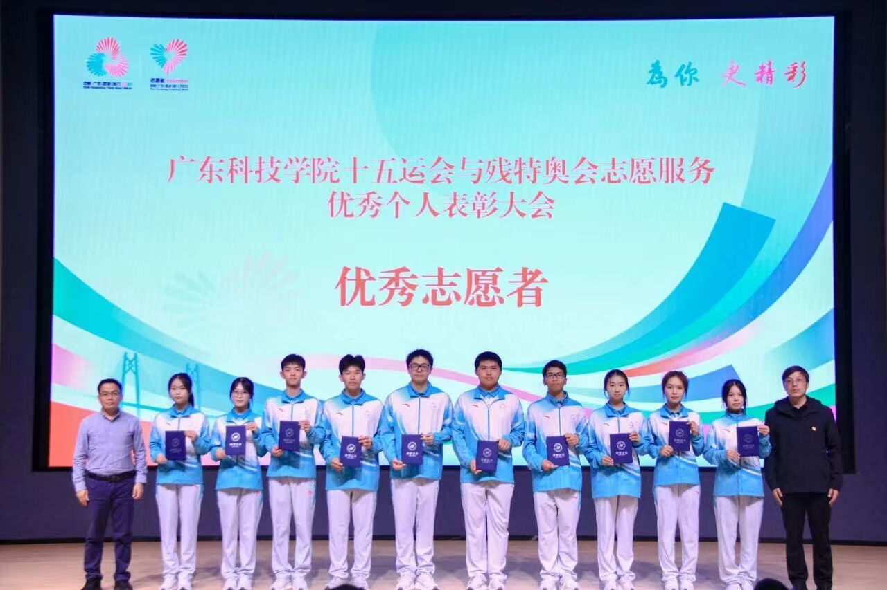
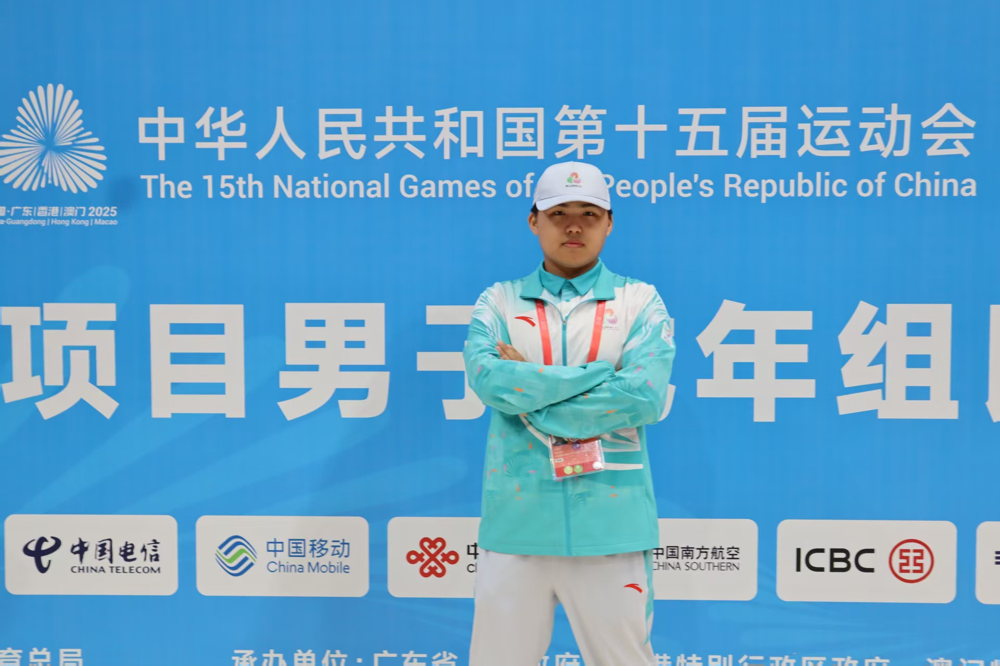

十五运 10 天复盘：国家级赛事的行政接待是怎么打仗的
一、为什么我要去
时间线要从大一下学期说起。2025 年春天，学校发布了第十五届全运会志愿者招募推文——推文里没有写任何具体岗位，只有一句话：「服从组委会统一调配」。我当时的心态很简单：这是国内最高级别的综合性体育赛事，志愿者名额有限、筛选严格，先拿入场券，岗位是什么上了岗再说。
通过面试选拔后，直到赛前培训阶段我才拿到分配结果：行政接待组。正式服务已经是 2025 年 11 月，我读大二上学期。回看这个「提前半年报名、不问岗位先上车」的选择：在大二就拿下一场高规格赛事的服务经历，对未来简历是加分项；对内是抗压能力、组织协调能力的极限测试。
二、岗位与责任
培训阶段拿到的分配结果是「行政接待组」，任务板块有三块：
- 到访领导接待引导——动线对接、临时需求响应、VIP 通道通畅
- 场馆公安人员餐食保障——每日近千人次的餐饮秩序维护、错峰放行
- 突发事件处置——跟带队老师一起处理"领导临时改道 / 餐饮配送延迟 / 媒体采访冲突"等突发
三、10 天的真实战场
工作节奏是这样的：每天 06:30 到岗，22:30 才离开。中间不能用手机、不允许开小差，中午换班吃饭只有 25 分钟。第一天我就遇到一个临场考验：原本规划好的领导动线因为临时改了议程，旧的指引牌全部要撤换，我一个人扛着指引牌在 8 分钟里跑了 3 个路口，每个点位准确就位。
最难的还不是体力，是「零差错」三个字。有一次餐饮配送车延迟 18 分钟，现场几百名公安干警等餐，没一个人发火，但所有人都在看我。我联系带队老师、对接餐厅调度、临时启用了预先准备好的备用面包和矿泉水——把「延迟」翻译成了"我们早有预案"，那一天我学到一件事：真正的服务不在顺境里，在所有人慌而你不慌的那几分钟。



四、跨部门协同：这是另一种"赞助谈判"
行政接待不是一个人能做完的事，必须同时和场馆运营方、公安执勤、餐厅配送、带队老师、领导秘书五条线同步。我把公关部积累的「议程—分工—应急预案」模板搬过来用，10 天里记了 3 个笔记本的分工表。我在学生会养成的"对细节讲规矩、对突发讲预案"的肌肉记忆，第一次被证明能跨场景复用。
五、结果
零重大差错完成 10 天高强度接待工作；遇到突发能 3 分钟内启动预案；在领导改道、餐饮延迟两次突发中没让事态升级；服务对象含省部级领导、场馆公安一线负责人；获得带队老师和场馆运营方一致好评。
第一次面对省部级领导时明显紧张，多说了一句"我来帮您"，被带队老师指出"过度服务反而打扰"——这条经验值千金；和餐厅配送方没有提前一天对接动线，多走了 1 次回头路。
六、给同届想报这类志愿的同学一句话
报名时你并不知道会被分到哪个岗位——组委会筛选的从来不是「挑岗位的人」，而是「哪里需要就去哪里的人」。岗位越"高规格"，越看重「抗压 + 不抢戏」；面试时不一定要表现出多外向，把"我能在高压下不添乱"这句话讲清楚，反而比"我性格开朗/擅长沟通"更有说服力。下一篇 · 政务实习← 街道团委 20 场活动复盘：政府场景下的活动策划怎么做 返回← 回到首页，看全部 5 篇复盘